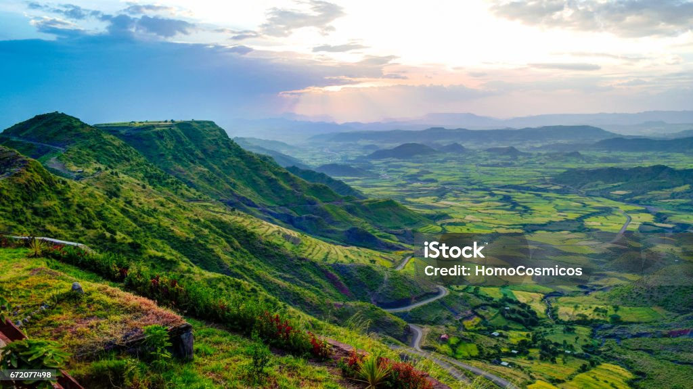
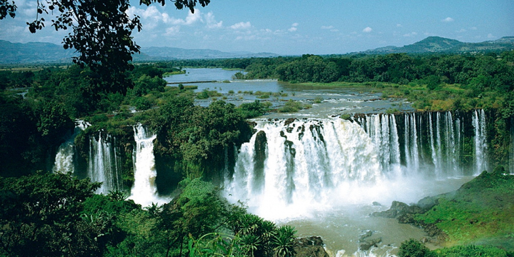
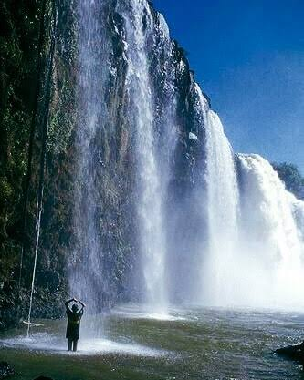
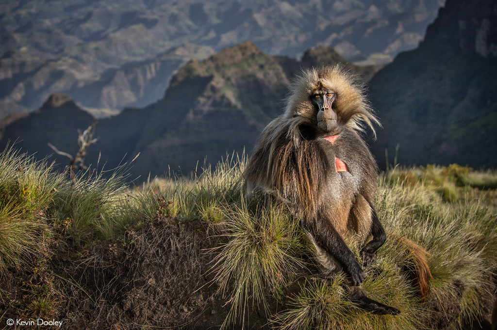

Simien Mountains
The Simien Mountains are among the most beautiful natural attractions in Ethiopia. They are famous for their high mountains, deep valleys and unique wildlife.

Lake Tana
Lake Tana is the largest lake in Ethiopia. It is located in the Amhara Region and is known for its islands, monasteries and beautiful natural scenery.

Blue Nile Falls
The Blue Nile Falls are an important natural attraction near Bahir Dar. The waterfall is known for its impressive scenery and flowing water.

Wildlife in Ethiopia
Ethiopia is home to many different animals. Some species are unique to the country and attract nature lovers and researchers.
- Ethiopian wolf
- Gelada monkey
- Walia ibex
- Mountain nyala

Why Protect Nature?
Protecting natural resources is important for wildlife, tourism and future generations. Visitors should respect nature and help keep tourist attractions clean.